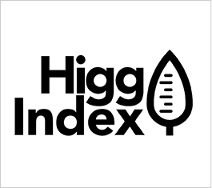
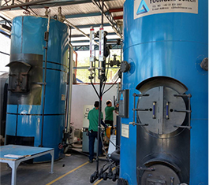
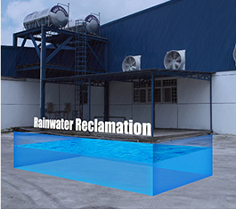

永續生態
企業總部通過LEED 金級認證
- 辦公室導入LEED-CI積分評級系統進行規劃，於2016年10月取得 LEED – CI金級認證。
- 整體規劃以降低能源消耗及污染(節水省電)、使用環保材質及設備、室內化學物與污染源控制。

推行辦公室環保
- 提倡節約能源，減少資源浪費。
- 例如：空調節約使用、減少紙張使用、安裝節水裝置、環保碳粉以及節能燈管／具的使用等。
- 不定時向同仁宣導節能減碳環保小常識，讓大家都能將節能減碳落實於生活中，人人都可成為愛地球的一份子。
- 推行辦公室環保 。
總部零碳排計劃
與慈心基金會合作，目標 2020 年達成種植 7,500 顆樹，抵消總部碳排放。目前為止已於雲林台西海岸種植超過 3,000 顆樹，並安排志工活動，邀請公司同仁一同參與，協助在台西海岸種樹及護樹。
SAC Higg index（環境評估自檢工具）
各廠定期回饋能源使用狀況及資訊，並進行自我評估。訂定節能目標，採取更減碳的措施，持續檢討改善。
生產區域－環境保護措施
- 裝設廢水處理系統，以維持健康安全的工作環境，避免造成環境汙染，並且進一步將廢水回收再利用，減少水資源的浪費。
- 裝設節能設備
- 燈管（LED/T5）
- 機台伺服馬達
- 動作感應裝置
- 改用環保鍋爐，以燃燒回收廢棄物取代煤碳或燃油
- 新廠採用 Busway 電力系統，同時可節能並提高安全性


